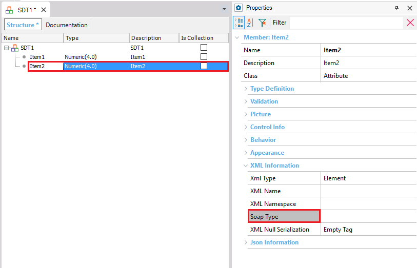

The Xml Soaptype property allows modifying the behaviour of the xml representation for each item of a structured data type. Description
This property represents the XML type that the serializer uses when building a SOAP message This property is located at SDT\ItemName\Properties\Xml information section\Xml SoapType . Syntaxnamespace.xsdType If the value is not set, it uses the default GeneXus to XML type conversion.This is used when importing a web service defines a structure data type with an element that is impossible to represent in GX. Samples
An example of this is when the xml schema defines a variable type (a dataset for example), in which XML is returned. In this case, the element is read as RAW XML and loaded to the SDT element as text. Suppose that you consume a web service which imports an Structured Data Type like this:
SDT1 Item1 Num(4) Item2 Char(9999)
Item 2 could be the dataset representation in the GeneXus Knowledge Base. This structure is populated throughout the following code, in order to be sent as a web service paramenter
SDT1
{
item1 = 1
Item2 = "<hello>1</hello>"
}
When the Item2 Xml Soaptype property value is set to = "http://www.w3.org/2001/XMLSchema.anyType", the SDT Xml representation is:
<SDT1 xmlns="Knowledge Base" >
<hello>1</hello>
</SDT1>
If you had not specified the soapType property, the Xml serialization would have done this:
<SDT1 xmlns="Knowledge Base" >
<Item2><hello>1</hello><Item2>
</SDT1>
Security Tips The XML type any or anyType defines elements with no restrictions over it's contents. In consequence, when this type is defined GeneXus will just verify the syntaxis of the element when an XML is produced. Do not use it unless it is strictly necessary, avoid user inputs on this tye of elements or sanitize contents properly. See Also
Xml Information Properties (SDT) |
| Backlinks | ||
| XML Name property (SDT) | XML Namespace property (SDT) | XML Null Serialization property (SDT) |
| Xml Type property (SDT) |